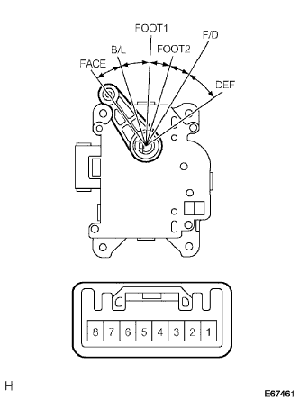

Mode Dampa servo SUB-ASSY Single Inspection |
| 1. Mode Dampa servo SUB-ASSY inspection |
|  |
Connect the battery plus to the seven terminals of the connector, and the negative battery negative to the 8 terminals.
When the battery negative is connected to each terminal of the connector, the arm rotates smoothly and stops at each mode position.
| Battery negative connection terminal | Arm stop position |
|---|---|
| 1 | Face |
| 2 | B/L |
| 3 | Foot1 |
| 4 | Foot2 |
| 5 | F/d |
| 6 | Def |